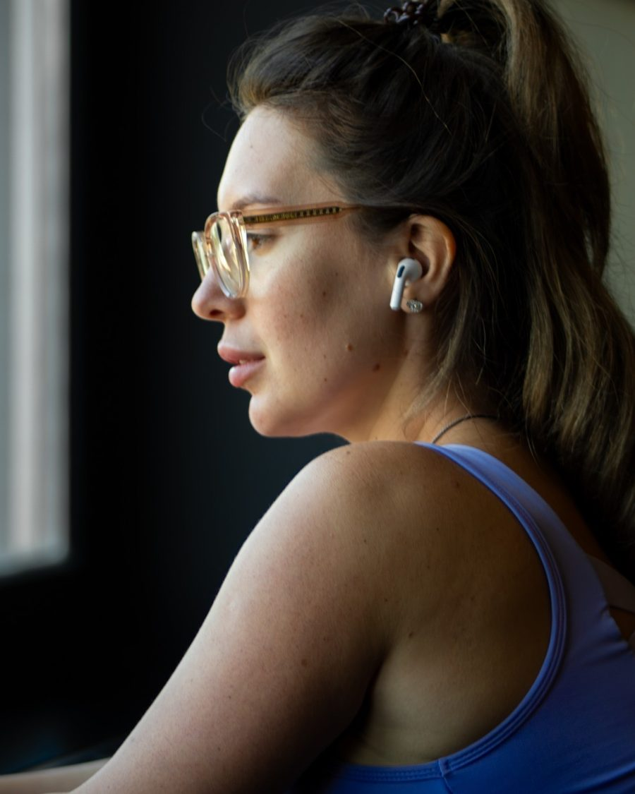

Your custom program, built around how much you sit.
Your goal, your stiff spots, your time, home or gym. Answer a few quick questions and your program is built from your answers: stronger, leaner, less stiff, or all three.
Take the quiz. Two minutes. Your answers stay in your browser.
Get your custom program. Your week, day by day, plus short resets for the spots that feel stiff.
Train with me. Follow-along videos filmed in the gym, with home versions, 10 to 40 minutes. When the Custom Program opens, members get their program, every video and a new workout every week.
The quiz
Build your program
Your custom program
Track
This program is for adults. If you are under 18, show this page to a parent, a PE teacher or a coach and train with them. The gentle mobility below is a safe place to start.
Check with your doctor first. Because of your health answers, start only with gentle mobility and ask your doctor before you add strength or cardio.
Adjusted for you. Show this plan to your doctor or physio before you start.
About the pain you mentioned. Sharp, constant or night pain, numbness, tingling or pain after an injury should be checked by a doctor or physiotherapist. Until you have the all-clear, skip any exercise that hurts there; the resets for those spots stay out of your plan.
Your week
Every day
Extra 5-minute resets
On sitting days
General exercise and education, not medical or diet advice. Stop if anything feels sharp or painful.
Your goal: no stiffness, stronger, leaner, or feeling better at your desk.
Your focus: whole body, legs and glutes, upper body and back, or core and posture.
Your place: home, gym or both, with the equipment you actually have.
Your time: 10 to 40 minutes, 2 to 4 days a week.
Your body: resets for the spots that feel stiff, and a safer plan if something hurts.
Your health: age, past surgeries and conditions decide what goes in your plan and what stays out.
Your program is built from these building blocks:
Unstiff
Mobility for people who sit all day. 10 to 20 minutes, anywhere.
Get Strong
Strength at home or at the gym, with a focus on legs and glutes, upper body or core. Beginner and intermediate.
Shape Up
Strength plus short cardio sessions (jump rope, incline walking) and simple daily habits. No crash diets.
Desk Reset
Posture, neck and back: upper-back strength, core and 5-minute resets for the spots that complain.
Every program runs in 4-week blocks that get a little harder each week, with gym and home versions. A new workout every week and a monthly live class with me. Want me to check your form and adjust it by hand? That's 1:1 coaching. Founding price for people on the waitlist.
Who builds your program
Built by a coach who sits all day too

I'm Kristine. I stream for hours, so I know exactly how a long day in a chair feels.
Degree in Physical Education and Sport
I've written personalized training plans and run online workout challenges
5 years live on Twitch, with a stretch break every hour for a community of 72,000
Every exercise in your program is filmed by me, in the gym, with a home version.
Questions
Before you start
Is this medical treatment?
No. I have a degree in Physical Education and Sport and coach mobility and strength. This is general exercise and education. If you have pain, an injury or a medical condition, see a doctor first.
Will this help me lose weight?
The Shape Up track combines strength, short cardio and daily movement, which supports fat loss together with how you eat. I don't promise kilos or write diets. For personal nutrition, talk to a dietitian.
I'm a complete beginner. Is it for me?
Yes. The beginner plans start with short sessions and simple moves, and every exercise has an easier option.
Home or gym?
Both work. Every workout has a gym version and a home version, and you can mix them in the same week.
Do you make meal plans?
No. I'm not a dietitian, so I don't write personal meal plans. I share general food ideas and quick recipes.
5:00
kristinemaia Five minutes, one printable page.
Start with five minutes.
The free 5-minute desk stretch. All four spots on one printable page: neck, shoulders, wrists and hips, from your chair.